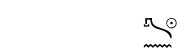
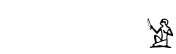
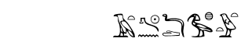
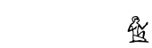

Absolute sign positionning
Absolute sign positionning
JSesh borrows the syntax from macscribe; the interpretation is made up from scratch, though.
A group made with the operator && will use absolute positioning.
each sign in such a group should be followed by a position of the form "{{x,y,s}}"
where  x is the distance of the sign to the left of the group
x is the distance of the sign to the left of the group
y is the distance to the top of the group
 s is the scale of the group (as a percentage)
s is the scale of the group (as a percentage)
If nothing is specified, the default values are 0,0,100.
x and y are expressed in 1/1000 of the height of an  (A1) sign
(A1) sign
 stp{{0,0,100}}&&n{{0,800,100}}&&ra{{700,0,70}}
stp{{0,0,100}}&&n{{0,800,100}}&&ra{{700,0,70}}

more fun with positioning :
 A1{{200,20,100}}&&T31\R50{{120,0,40}}
A1{{200,20,100}}&&T31\R50{{120,0,40}}

Ligatures
JSesh knows about a number of special groups. The operator "&" means that signs are to be grouped together in a special way.
 G1&X1-stp&n&ra-D&d-Ax&x-t&w&t- gives :
G1&X1-stp&n&ra-D&d-Ax&x-t&w&t- gives :

User Modifiers
To allow extensions of the manuel, JSesh can parse all modifiers after a sign, if they respect this rule :
* a modifier is introduced by "\"
 * it contains a sequence of letters, which is his name, and a sequence of digits, which is his value.
* it contains a sequence of letters, which is his name, and a sequence of digits, which is his value.
 A1\IdontMeanAthing\number1000
A1\IdontMeanAthing\number1000
